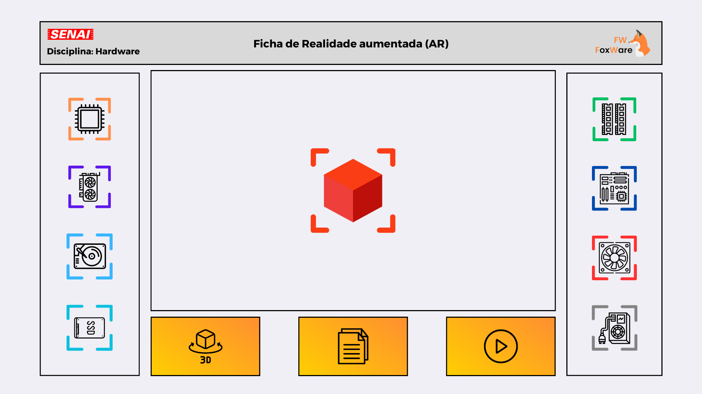

Conheça os Conteúdos Interativos da matéria de Hardware 
Baixe o APK para acesso a Realidade Aumentada
Cooler
Este é o Cooler
Um componente que extrai o calor de um chip da CPU ou de outros chips de execução que geram calor, como um processador gráfico — placa de vídeo (GPU). Em seu modo mais simples, funcionam como ventiladores que deslocam o ar quente do componente para o interior do gabinete, que por sua vez tem seus próprios coolers para extrair o calor do bloco fechado para o ambiente.
Passe o mouse sobre a imagem ao lado para ver o item
Fonte de alimentação
Esta é a Fonte de alimentação
A fonte de alimentação é responsável por fornecer energia elétrica para todos os componentes do computador. Ela converte a energia da tomada em voltagens apropriadas para os componentes, como a placa-mãe, processador, memória RAM, discos rígidos, placa de vídeo, entre outros. A fonte de alimentação possui uma série de cabos que conectam aos componentes do computador e fornece energia de acordo com a demanda de cada componente. É importante escolher uma fonte de alimentação adequada às necessidades do sistema, para garantir que todos os componentes recebam energia suficiente para funcionar corretamente.
Passe o mouse sobre a imagem ao lado para ver o item
HDD
Este é o HDD
HDD é um acrônimo para Hard Disk Drive. No brasil, geralmente é chamado de HD ou disco
rígido.
Sua principal função é armazenar dados – desde o sistema operacional até os arquivos
mais diversos. Normalmente,
é o maior dispositivo de armazenamento de dados em um computador.
Um HD é um dispositivo de armazenamento não volátil, ou seja, os dados não são perdidos
quando o computador é desligado.
É um dispositivo de armazenamento secundário para armazenar dados permanentemente. Um HD
interno, conectam-se a placa-me usando um cabo ATA,
SCSI ou SATA e são alimentados por uma conexão PSU (power supply unit).
Passe o mouse sobre a imagem ao lado para ver o item
Placa de Video
Esta é a Placa de Video
A placa de vídeo é responsável por exibir imagens na tela e pode ser usada para rodar jogos e softwares que demandem processamento visual. A sua potência é importante para determinar a performance dos jogos, como qualidade e FPS, e como o PC lida com elementos gráficos pesados em programas de modelagem 3D. Além disso, a placa de vídeo pode ser usada como auxiliar em alguns programas, através da aceleração por hardware.
Passe o mouse sobre a imagem ao lado para ver o item
Placa Mãe
Esta é a Placa Mãe
Uma placa-mãe é uma placa de circuito que conecta e controla todos os componentes principais de um computador. Ela permite que a CPU, a memória RAM, o armazenamento e outros dispositivos se comuniquem entre si e com o sistema operacional. A placa-mãe também contém portas de entrada e saída para dispositivos externos, como teclado, mouse, monitor e rede. Em resumo, a placa-mãe é o "cérebro" do computador, responsável por garantir o funcionamento correto de todos os componentes.
Passe o mouse sobre a imagem ao lado para ver o item
Processador
Este é o Processador
O processador é a unidade central de processamento de um computador (CPU), que funciona como o cérebro do computador, pois interage e faz as conexões necessárias entre todos os programas instalados. Neste processo, ele também interpreta as informações enviadas pelos programas, realiza diversas operações, inclusive gerando a interface que nós interagimos quando usamos um computador. Os processadores são colocados na Placa-Mãe, por soquetes, e sua estrutura é composta por bilhões de transistores.
Passe o mouse sobre a imagem ao lado para ver o item
SSD
Este é o SDD
O SSD (Solid State Drive) é um dispositivo de armazenamento de dados que utiliza chips de memória flash para armazenar informações de forma rápida e eficiente. Ao contrário dos discos rígidos tradicionais, os SSDs não possuem partes móveis, o que os torna mais rápidos, duráveis e silenciosos. Eles são capazes de acessar os dados armazenados com maior velocidade, o que resulta em um aumento significativo no desempenho do computador. Os SSDs estão disponíveis em vários formatos e capacidades, e são frequentemente usados em notebooks, desktops, servidores e outros dispositivos eletrônicos que requerem armazenamento rápido e confiável.
Passe o mouse sobre a imagem ao lado para ver o item